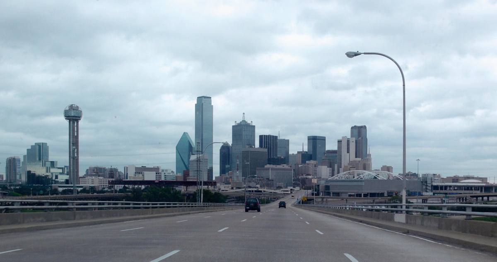

THE DALLAS PLANNING EDIT / OCTOBER 2026
Bring people
together.
Make Dallas
part of the plan.
Thoughtful guides to venues, guest arrivals, and the moments between meetings.
Explore the planning guides

A clearer brief.
A better gathering.
Choose the outcome, work out the practical details, and leave space for conversation. You do not need to put every Dallas attraction into one event.
The planning guides
01—05 / FIRST EDITIONChoose a Dallas venue around the day you want
A useful shortlist starts with the people, the format, and the journey between stops.
Read the guideMEETING DESIGNA small Dallas meeting with room to think
One clear outcome, a realistic agenda, and a room that supports the conversation.
Read the guideGUEST LOGISTICSMake Dallas guest arrivals feel straightforward
An arrival note can do more for your event than another page of attractions.
Read the guideAFTER THE MEETINGPlan a Dallas group dinner people can enjoy
Choose the conversation first, then work out the table, menu, and travel.
Read the guideTRAVEL & EVERYDAY VISIONThe extra packing list: glasses, contacts, and conference travel
From presentation screens to dinner menus, a busy event day has its own vision routines.
Read the guideLocal resources.
Current answers.
Use official directories and operators for availability, transport details, and current event information.
Useful ideas, without a packed itinerary.
Meetings & Events Dallas is an independently published planning guide. We combine source-based local information with original suggestions for organizing your day. We do not operate venues, book events, or represent Visit Dallas or the City of Dallas.
This site is published by the LaserCare account and belongs to the same publishing group as our other DFW guides. Featured eye-care links point to LaserCare Eye Center. They are included as local resources for the lifestyle topics discussed. No medical outcome or venue availability is promised.
Guides are researched, not accounts of firsthand venue visits. Confirm dates, access, prices, and arrangements directly with each provider. Sources checked October 6, 2026.